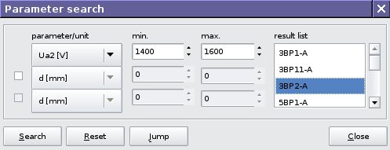

V/3. Parameter search

You can search items by maximal three parameter intervals what you need. It displays results in result list. Doubleclick to selected type in result list to jump.
Back to Contents